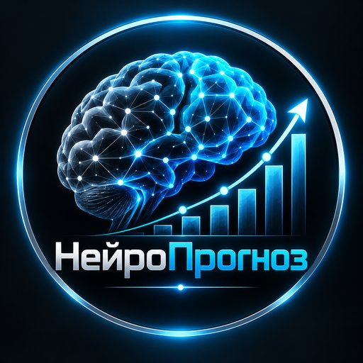

Прогнозы на матчи CS2 от самообучающейся ИИ-модели. Она круглосуточно пересчитывает шансы команд и публикует сигнал только тогда, когда видит перевес над коэффициентом. Все результаты — открыто, без удалений.
Подписаться в Telegram| Ставок | Угадано | Ср. кэф | Итог | |
|---|---|---|---|---|
| Победа | 52 | 50% | 2.09 | +2.4% |
| Фора | 11 | 36% | 2.28 | -1.7% |
| Ставок | Угадано | Ср. кэф | Итог | |
|---|---|---|---|---|
| Ноябрь 2026 | 16 | 44% | 2.16 | -2.2% |
| Октябрь 2026 | 47 | 49% | 2.10 | +2.9% |
| Ставок | Угадано | Ср. кэф | Итог | |
|---|---|---|---|---|
| до 1.80 | 21 | 52% | 1.56 | -8.1% |
| 1.80–2.30 | 21 | 52% | 2.04 | +5.5% |
| 2.30–3.20 | 19 | 42% | 2.65 | +7.0% |
| выше 3.20 | 2 | 0% | 3.76 | -3.7% |
Ещё 5 сигналов ждут результата.
Статистика считается по всем сигналам, опубликованным в канале, по коэффициенту из сигнала. Ставка — в % от банка.
Жирным — фаворит по модели и его шанс на победу; далее — шанс победы всухую и шанс третьей карты. Это аналитика, а не сигналы и не советы ставить: ставки с перевесом выходят в канале отдельными постами.
| МСК | Матч | Шанс фаворита | Всухую / 3 карты |
|---|---|---|---|
| 🏆 DACH CS Masters Season 6 | |||
| 04.11 20:00 | BIG Academy — regnum4games | 83% | 2:0 61% · 3 карты 33% |
| 04.11 22:00 | Entropy — Sissi State Punks | 86% | 2:0 69% · 3 карты 26% |
| 🏆 ESEA Season 59: Advanced Division - Europe | |||
| 04.11 20:00 | Ryvex — Revise | 55% | BO1 |
| 04.11 20:30 | Falcons Force — Xcity | 64% | BO1 |
| 04.11 21:00 | TTG Esports — DimoniX | 79% | BO1 |
| 04.11 21:30 | DINERO — OLDBOYS PL | 88% | BO1 |
| 04.11 21:30 | The Chosen Few — Vitality Academy | 60% | BO1 |
| 04.11 22:00 | PENSIONERS — Xcity | 73% | BO1 |
| 04.11 22:30 | Al Ahli — NoTime | 70% | BO1 |
| 05.11 21:30 | Banda Chuya — NoTime | 62% | BO1 |
| 🏆 Elisa Open Suomi Season 14 | |||
| 04.11 21:00 | SINQU — BOJONG | 58% | 0:2 33% · 3 карты 44% |
| 05.11 18:30 | Prestige — KUUSAMO | 78% | 2:0 55% · 3 карты 36% |
| 05.11 21:00 | Nordic Valor — boyband | 77% | 0:2 56% · 3 карты 34% |
| 🏆 CCT Europe 2026 Series 13 | |||
| 04.11 21:00 | Nexus — The Last Resort | 64% | 2:0 42% · 3 карты 42% |
| 05.11 12:00 | GenOne — MAYBE | 73% | 2:0 48% · 3 карты 40% |
| 05.11 15:00 | 6yuBoJlbl — Leo | 70% | 0:2 46% · 3 карты 40% |
| 05.11 18:00 | FORZE Reload — G2 Ares | 66% | 2:0 40% · 3 карты 43% |
| 05.11 21:00 | Butterfly — megoshort | 71% | 2:0 45% · 3 карты 41% |
| 🏆 CCT Europe 2026 Series 14 Play-In | |||
| 04.11 21:00 | Prestige — MAYBE | 58% | 2:0 34% · 3 карты 46% |
| 05.11 12:00 | Bebop — megoshort | 51% | 0:2 27% · 3 карты 46% |
| 05.11 18:00 | Illyrians — Honvéd | 68% | 2:0 44% · 3 карты 41% |
| 🏆 Fiesta Series 3 | |||
| 04.11 21:00 | INOX Division — Johnny Speeds | 61% | 2:0 38% · 3 карты 43% |
| 05.11 12:00 | QUAZAR — FOKUS | 73% | 0:2 49% · 3 карты 39% |
| 05.11 15:00 | Revise — Dark Moon | 56% | 0:2 33% · 3 карты 45% |
| 05.11 21:00 | GenOne — BRUTE | 65% | 0:2 42% · 3 карты 43% |
| 🏆 Gamers Club Liga Série A: October 2026 | |||
| 04.11 21:30 | RED Canids Academy — Underworld | 72% | 2:0 50% · 3 карты 38% |
| 05.11 00:00 | BORRACHEIROS — ALKA | 58% | 2:0 38% · 3 карты 44% |
| 05.11 21:30 | QUINTESSÊNCIA — Grêmio | 57% | 2:0 32% · 3 карты 45% |
| 06.11 00:00 | RUSH — MEIA NOITE | 61% | 0:2 37% · 3 карты 43% |
| 🏆 CCT South America 2026 Series 8 | |||
| 04.11 22:00 | BORRACHEIROS — Low Cortisol BR | 50% | 0:2 27% · 3 карты 46% |
| 05.11 01:00 | Isurus — Underworld | 60% | 2:0 39% · 3 карты 41% |
| 🏆 MČR 2026 | |||
| 04.11 22:00 | Dynamo Eclot Phoenix — eSuba | 77% | BO1 |
| 🏆 NODWIN Clutch Series 14 Play-In | |||
| 05.11 12:00 | BAKS — Honvéd | 76% | 2:0 55% · 3 карты 37% |
| 05.11 15:00 | Fire Flux — Illyrians | 60% | 2:0 36% · 3 карты 44% |
| 05.11 18:00 | BASEMENT BOYS — Misa | 65% | 2:0 42% · 3 карты 42% |
| 05.11 21:00 | Johnny Speeds — Drama | 63% | 2:0 41% · 3 карты 41% |
| 🏆 United21 Season 58 | |||
| 05.11 12:00 | NAVI Junior — STATE | 62% | 0:2 39% · 3 карты 44% |
| 05.11 14:30 | TheChampionGG — SANCTUM | 55% | |
| 🏆 European Pro League Series 10 | |||
| 05.11 12:00 | Walczaki — HYPERSPIRIT | 57% | 2:0 33% · 3 карты 44% |
| 05.11 14:30 | ex-ENCE — Noir Verse | 55% | |
| Дата | Матч | Кэф | Итог | |
|---|---|---|---|---|
| ❌ | 04.11 | Spirit Academy — Leo 2:0 | 1.90 | -2.0% |
| ✅ | 03.11 | DimoniX — Growth Lab Esports 1:0 | 1.99 | +2.0% |
| ✅ | 03.11 | Glitchtech — BOJONG 0:1 | 2.28 | +2.6% |
| ❌ | 03.11 | Privateer — aimers 0:1 | 2.12 | -2.0% |
| ❌ | 03.11 | BRUTE — Nexus 2:1 | 2.80 | -1.1% |
| ✅ | 02.11 | B8 Academy — LPH 0:1 | 1.94 | +1.8% |
| ✅ | 02.11 | NoTime — OLDBOYS PL 0:1 | 1.41 | +0.8% |
| ❌ | 02.11 | ECSTATIC — STATE 0:1 | 4.00 | -1.7% |
| ✅ | 02.11 | XI — ECSTATIC 0:1 | 2.25 | +2.5% |
| ❌ | 01.11 | 100 Thieves — Wildcard 2:0 | 1.75 | -1.8% |
| ❌ | 01.11 | DENDELE — Imperial 3:0 | 2.27 | -1.2% |
| ❌ | 01.11 | Metizport — WBT Academy 1:2 | 1.45 | -2.0% |
| ✅ | 01.11 | JiJieHao — Iberian Soul 0:2 | 2.60 | +2.3% |
| ❌ | 01.11 | prodigy RU — Ducks 2:1 | 2.12 | -1.7% |
| ✅ | 01.11 | JUMBO — TTG Esports 0:1 | 1.74 | +1.5% |
| ❌ | 01.11 | BESTIA — 100 Thieves 0:2 | 2.00 | -2.0% |
| ❌ | 31.10 | Fluxo — BARCA 0:2 | 1.58 | -2.0% |
| ❌ | 31.10 | Ducks — TTG Esports 2:1 | 1.79 | -1.6% |
| ✅ | 31.10 | OG — Iberian Soul 1:2 | 1.75 | +1.5% |
| ❌ | 31.10 | Low Cortisol BR — Turma do Pagode 2:1 | 1.33 | -2.0% |
| ✅ | 31.10 | Sökerorg — Fortress 2:0 | 1.31 | +0.6% |
| ✅ | 31.10 | JiJieHao — BASEMENT BOYS 2:0 | 1.30 | +0.6% |
| ❌ | 31.10 | Bounty Hunters — BARCA 1:2 | 2.00 | -1.5% |
| ❌ | 31.10 | Galorys — Procyon 1:2 | 1.38 | -2.0% |
| ❌ | 31.10 | Spirit Academy — Phantom 0:2 | 2.70 | -0.8% |
| ❌ | 31.10 | DENDELE — Turma do Pagode 2:0 | 1.90 | -1.7% |
| ✅ | 30.10 | Spirit Academy Black — TTG Esports 0:2 | 2.37 | +2.7% |
| ✅ | 30.10 | The Chosen Few — Spirit HU 1:0 | 1.70 | +1.4% |
| ✅ | 30.10 | Low Cortisol BR — ALKA 2:0 | 2.15 | +2.3% |
| ✅ | 30.10 | NEXVOID — FlyQuest 0:2 | 1.36 | +0.7% |
Ждут результата: 5 сигналов — смотрите их в канале.
| ❌ | 04.11 | PRIVATE — Dark Moon 1:2 |
| ✅ | 04.11 | Natus Vincere — Falcons 2:1 |
| ❌ | 04.11 | The MongolZ — FURIA 2:1 |
| ✅ | 04.11 | Spirit Academy — Leo 2:0 |
| ✅ | 04.11 | MOUZ — PARIVISION 2:0 |
| ✅ | 04.11 | Liquid — BetBoom 1:2 |
| ✅ | 04.11 | HEROIC — Falcons 0:2 |
| ✅ | 04.11 | Natus Vincere — B8 2:0 |
| ✅ | 04.11 | Liquid — TYLOO 2:0 |
| ❌ | 04.11 | BetBoom — Aurora 2:0 |
| ✅ | 03.11 | The Chosen Few — TTG Esports 0:1 |
| ✅ | 03.11 | Glitchtech — BOJONG 0:1 |
| ❌ | 03.11 | Vitality Academy — 99firepower 1utility 0:1 |
| ✅ | 03.11 | DimoniX — Growth Lab Esports 1:0 |
| ✅ | 03.11 | Phantom Academy — Fortress 1:0 |
| ❌ | 03.11 | Privateer — aimers 0:1 |
| ❌ | 03.11 | QUINTESSÊNCIA — RED Canids Academy 2:0 |
| ✅ | 03.11 | MEIA NOITE — BESTIA Academy 2:0 |
| ❌ | 03.11 | 9INE — Revise 1:2 |
| ✅ | 03.11 | OLDBOYS PL — B8 Academy 1:0 |
| ✅ | 03.11 | Fraternity — XI 0:1 |
| ❌ | 03.11 | RBLS — PCIFIC 2:0 |
| ❌ | 03.11 | Sökerorg — Four Magic 1:2 |
| ✅ | 03.11 | MASONIC — MASQ 1:0 |
Турниры: Major, IEM, BLAST, PGL, ESL Pro League, CCT, NODWIN и другие турниры Counter-Strike 2.